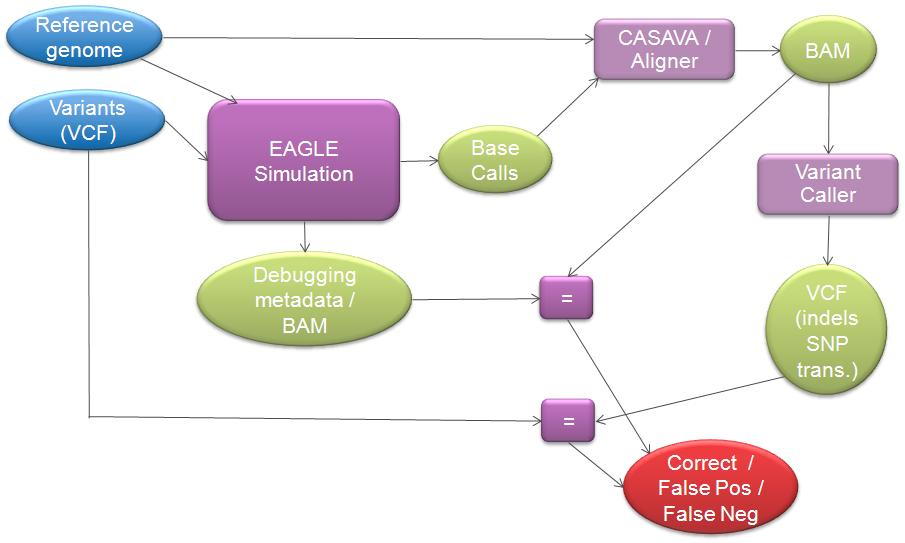
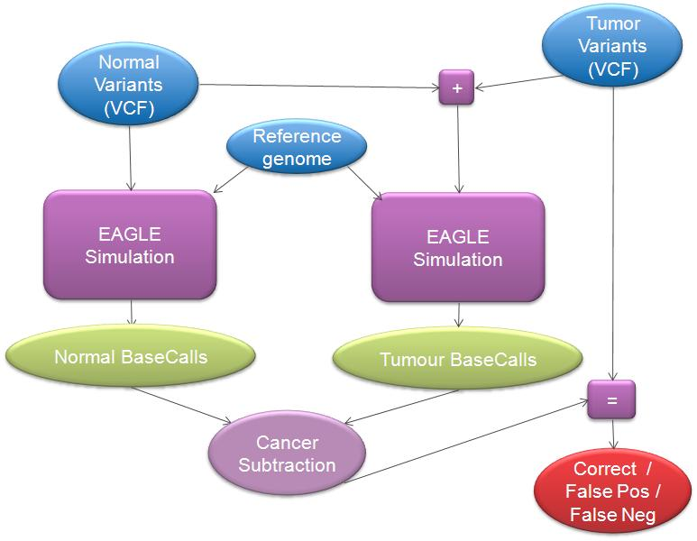

Introduction

EAGLE is a simulator of sequencing workflow.
Its aims are:
- to simulate the nucleotide sequence of a sample through the application of variants on a reference genome,
- to simulate the output of a sequencer working on this sample,
- to include this simulation at the heart of a tool analysis/validation flow.
It is used to validate the behaviour and accuracy of downstream variant calling and cancer subtraction tools.
EAGLE can simulate random basecalls with similar properties to real datasets for various types of analysis, or synthetic basecalls with controlled features for targetted analysis.
Inputs are provided as VCF and RTA configuration files, and the final output is an RTA Run folder with BCL files, which can be directly used by CASAVA.
BAM files and metadata are also generated for subsequent analysis with IGV.
Where EAGLE may be able to help you
EAGLE can help with a broad range of problems:
- Validating secondary and tertiary analysis tools (aligners, variant callers, etc.)
- Benchmarking secondary and tertiary analysis tools in controlled and reproducible conditions
- Understanding real datasets: if you manage to simulate a dataset with the same properties as a real dataset, you may be able to deduce interesting properties (at which stage did mismatches get introduced? which variants really were in the original sample?)
- Generating random datasets that are representative of real datasets to have life-like situations, but with the added benefits of knowing what the truth is: what the initial errors and mismatches are.
- Simulating specific variants to figure out if/where/why they (don't) get detected - the provided variants can be random (usually for SNP and small indels) or accurate (usually by providing known translocations)
- Pinpointing suspected deficiencies in tools in order to address them precisely
- Generating datasets with controlled features to analyse specific situations without uncontrolled influence from other parameters
- Generating reproducible datasets on separate servers
How EAGLE may be able to help you
EAGLE Simulation
First, EAGLE can simulate a sample and its sequencing:

EAGLE Analysis
The output of EAGLE Simulation can then be used to validate or benchmark external tools such as Aligners and Variant Callers:

...or Cancer Subtraction tools:

Using EAGLE

To use EAGLE, you can either use a pre-installed version or configure and install one directly from the source repository. Here is how to do this.
For a step-by-step tutorial, you can go through the following examples in order, or jump to any of them directly.
- EAGLE Use Case - Simulating a small Run Folder from PhiX
- EAGLE Use Case - Simulating a typical HiSeq run from a Human sample (haploid version)
- EAGLE Use Case - Refining our Human sequencing simulation (diploid version)
- EAGLE Use Case - 2x250 realistic Human sequencing simulation
- EAGLE Use Case - Simulating a uniform reads distribution in our PhiX simulation
- EAGLE Use Case - Simulating tumour+normal pairs
- EAGLE Use Case - Simulating purity
- EAGLE Use Case - Simulating Copy Number Variations
- EAGLE Use Case - Generating BAM files for visualisation with IGV
- EAGLE Use Case - Long reads simulation
- EAGLE Use Case - Using a different template length distribution
- EAGLE Use Case - Coverage affected by GC content
- EAGLE Use Case - Simple metagenomics simulation
Insighful use cases, to be validated:
- EAGLE - On simulating 2x250 long reads
- Haplotyping using dilution and amplication
- Purity in tumour samples
Deprecated, but still available for reference:
- Less automated: Simulating purity in tumour samples (chr21 example)
- EAGLE Use Case - Interfacing EAGLE with CASAVA
More insight
For estimations about RAM and CPU usage: EAGLE - Performance and resources recommendations.
For details of the EAGLE toolset: Detailed description of EAGLE tools and EAGLE Data Files.
For developers: EAGLE - Developers portal.